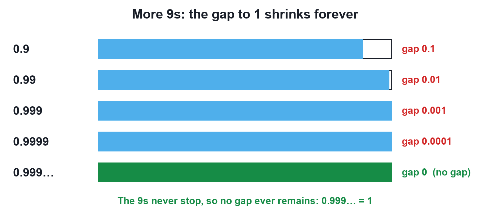

Mathematics
Why 0.999… Equals 1
Video not playing? Watch on Instagram · YouTube
0.999… with the 9s never stopping is exactly 1, not "a little less". Three short proofs show why.
Download the short notesPDF, 89 KB · solved examples, practice set and answer key That's all the videos in this chapter so far Back to Numbers and infinity
Key points
- 0.999… = 1: two names for one number.
- 1/3 = 0.333…, so 3 × 1/3 = 0.999… = 1.
- Let x = 0.999…; 10x − x = 9, so x = 1.
- 0.999 with three 9s is less than 1; only the never-ending 0.999… equals 1.
Proof 1: one third
1/3 = 0.333… ⇒ 3 × 1/3 = 3 × 0.333… ⇒ 1 = 0.999…
Proof 2: algebra
- Let x = 0.999…
- Then 10x = 9.999…
- Subtract: 10x − x = 9.999… − 0.999… (the endless 9s cancel)
- 9x = 9, so x = 1
Proof 3: no number in between

Between any two different numbers there is always another (their average). Try to find one between 0.999… and 1: there is none, so they are the same number.
Related facts
- The same trick works for any recurring decimal: 0.777… = 7/9, 0.4545… = 45/99 = 5/11.
- Every terminating decimal has a recurring-9 twin: 0.5 = 0.4999…
- Recurring decimals are rational numbers (they can be written as p/q).
Quick quiz
4 questions. Choose an answer for each, then submit to see your score and the explanations.
More from Numbers and infinity
 Natural, Whole, Integers and Rational NumbersEach new family of numbers answers a question the old one could not, and every family lives inside the next: N ⊂ W ⊂ Z ⊂ Q.Mathematics
Natural, Whole, Integers and Rational NumbersEach new family of numbers answers a question the old one could not, and every family lives inside the next: N ⊂ W ⊂ Z ⊂ Q.Mathematics Rational Numbers on the Number LineTo place p/q, cut each unit into q equal parts and count p parts from 0: right for positive, left for negative.Mathematics · simulation
Rational Numbers on the Number LineTo place p/q, cut each unit into q equal parts and count p parts from 0: right for positive, left for negative.Mathematics · simulation